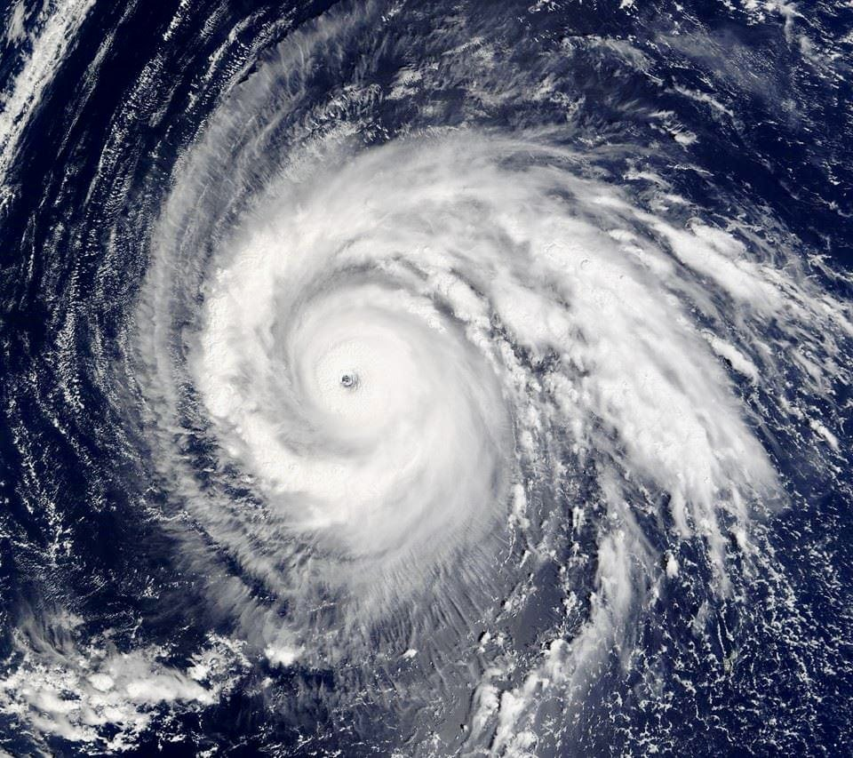
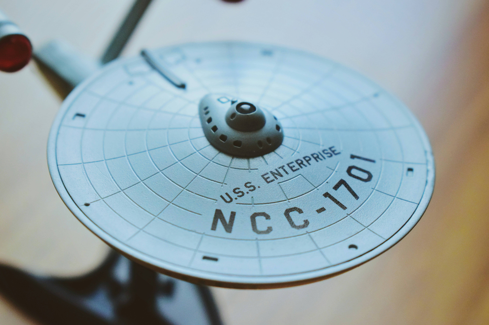
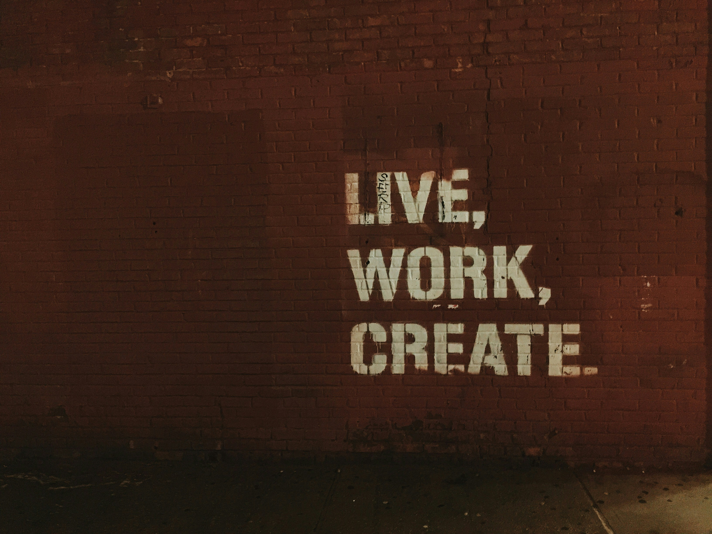

Friends to Family
Born and raised in North carolina I followed my best friend and his family to Florida after high school. All my biological family all live in N.C. and for myself miving in Florida it helps build a stronger relationship with my best friend's family. They are not just close friends, I consider them my chosen family.

Hobbies & Stuff
There are many hobbies that I have. Spending time at theme parks are one of them. Having an annual pass to Disney World makes it easy for me to go anytime I plan to. Tracking hurricanes is another hobby I enjoy. Storm chasing is fascinating to me whether its a tornado or hurricane. The science behind it all makes is interesting. Referring to myself as a “book of useless knowledge”. My mind can wonder and think about things, for the how and why even if they do not matter. Then Google became worldwide hit and it was at your fingertips.

Half nerd/Half country boy
Born and raised as a country boy it is in my DNA . Although I do have a nerdy side. I enjoy all things Star Trek. I even have a authentic The Next Generation Costume. Sometimes I think I have a pretty good resemblance to Commander William T Ryker from the USS Enterprise one of the main characters in the show. However I have nothing against Star Wars franchise.

Work, School, & Life
Overachieving and giving 100% is a quality that i put into my work, school and everyday life. Making sure I know everything, what I need to do and what is expected of me. Making sure I can do it correctly the first time. As well as being very detail oriented. Which is why Software Engineering seems like a good fit for me.